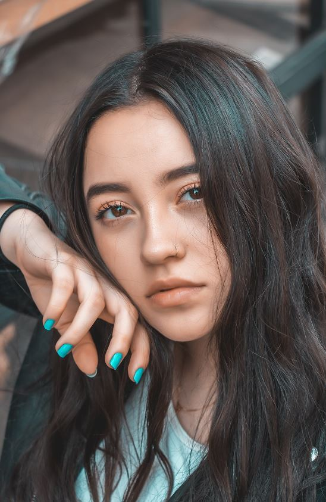
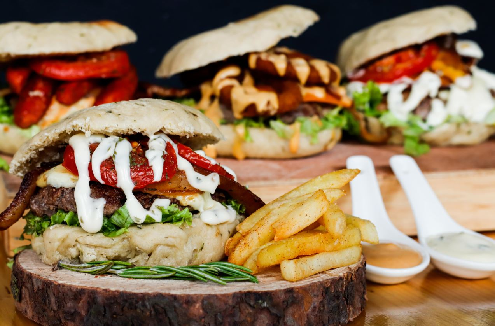
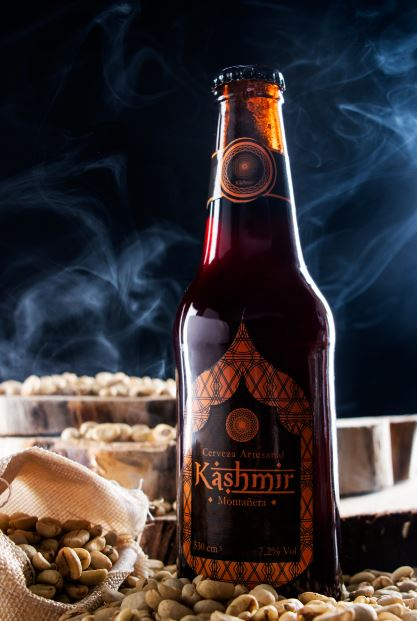
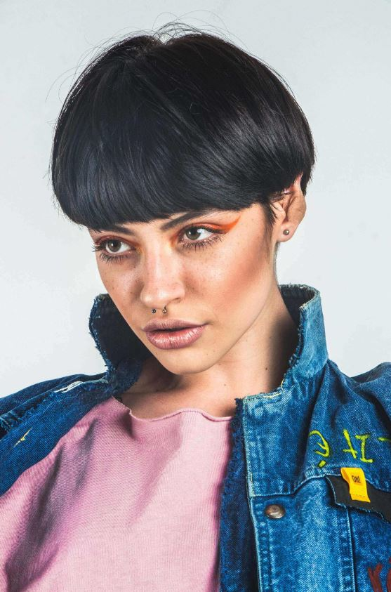
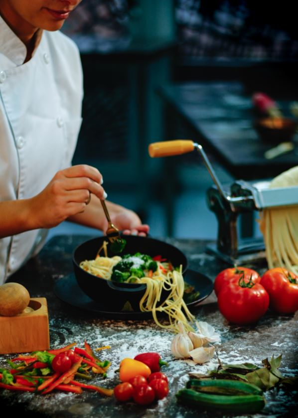
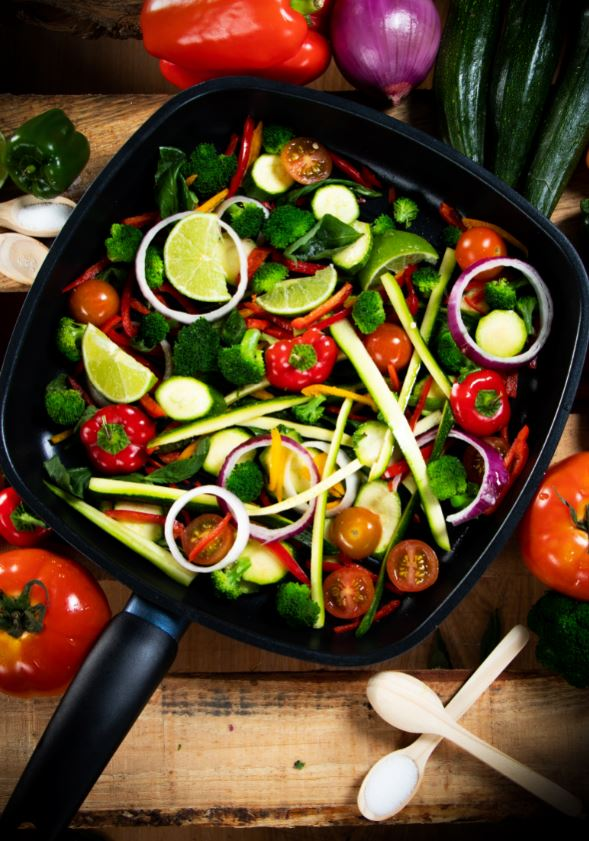
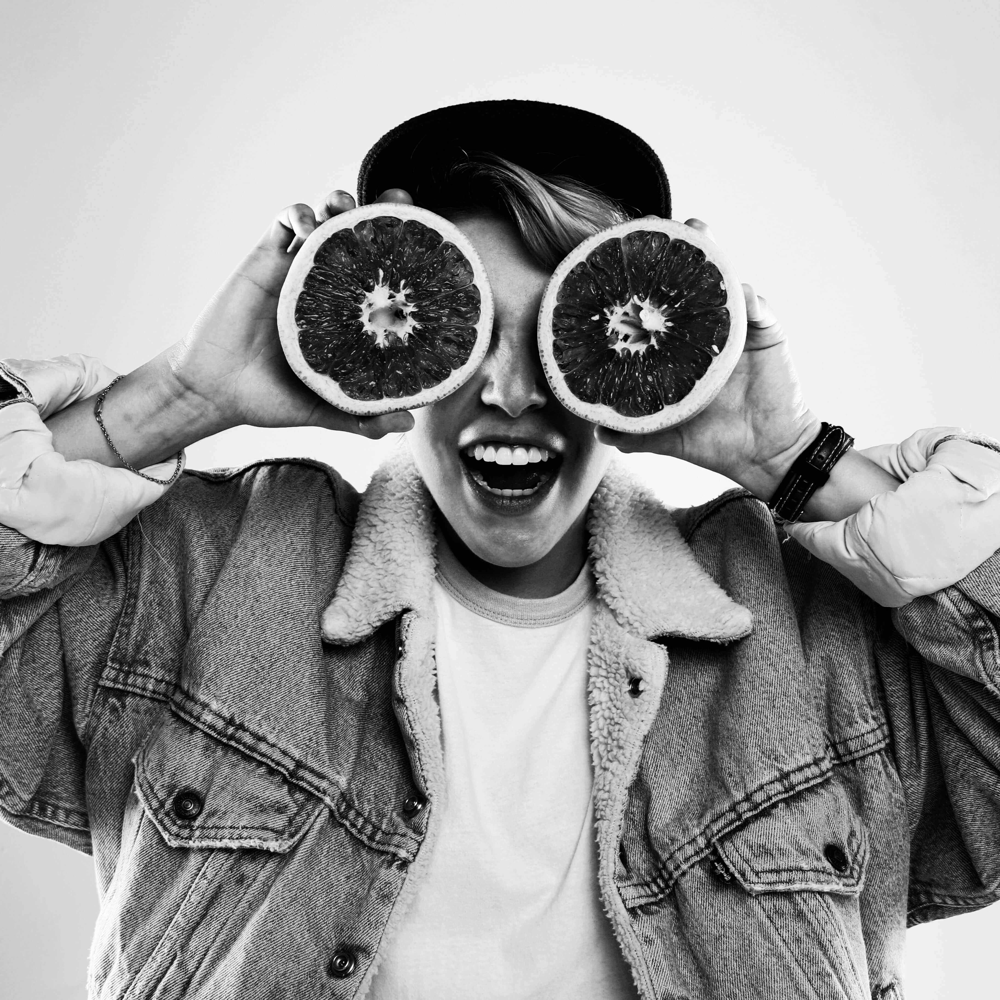
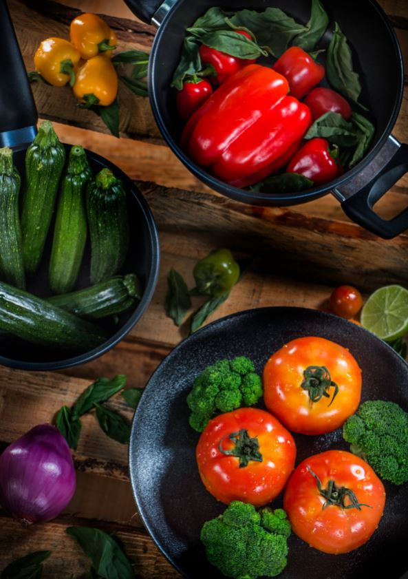
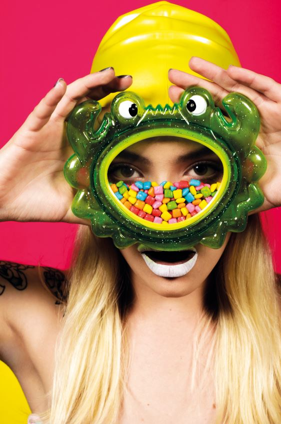
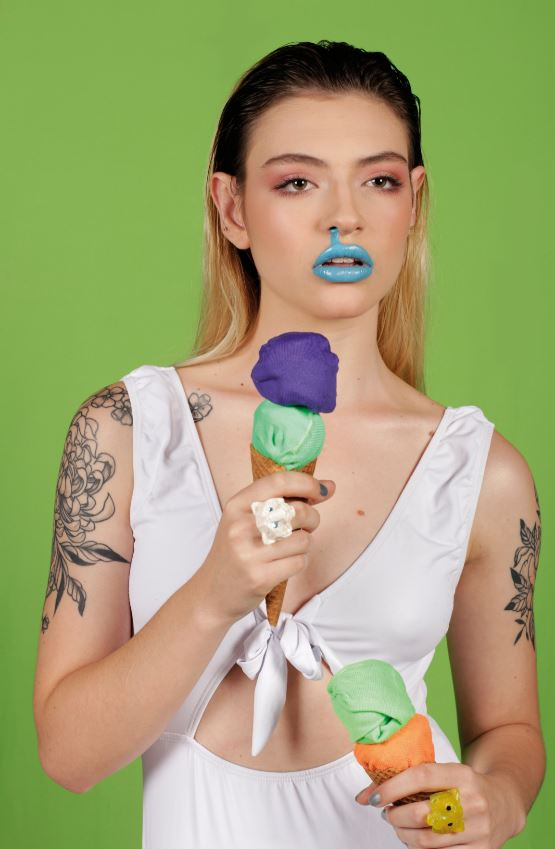

A.Restrepo
Are Restrepo
Photographer

About Me
¡ Hola !
Soy Ana, una chica a la que le gusta viajar, conocer culturas nuevas,experimentar y sobre todo la fotografía.
Estudie comunicación social y periodismo en la universidad pontificia bolivariana de medellin, a nivel profesional me dedico a la fotografía de moda, producto y al reporterismo grafico. A nivel personal me encanta capturar momentos cotidianos, gestos espontaneos en las personas y la belleza natural de nuestro entorno.
Actualmente me encuentro ubicada en Medellin Colombia, si quieres saber más sobre mi te invito a ver mi trabajo y a seguirme en mis redes sociales.
Portafolio












×